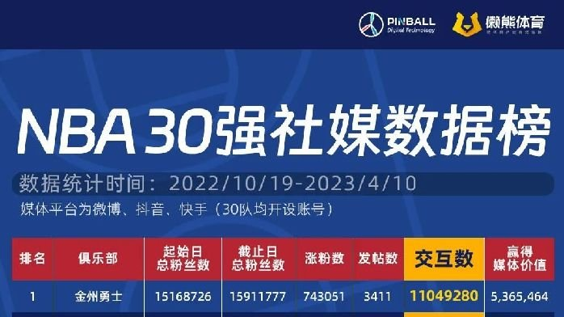

EDITORIAL DIGEST · 本站原创归纳
这篇文章在讨论什么
以 NBA 30 支球队的微博、抖音和快手数据为样本，讨论粉丝规模、互动量与品牌赞助媒体价值之间并不完全一致的关系。 本站把原文中对当前研究最有用的部分组织成下方营销启发卡；它们是编辑归纳，不是原文逐字转载。
MARKETING KNOWLEDGE ROUTER · 营销知识路由器
营销启发卡
将文章最有价值的判断拆成营销启发卡；卡片会继续连接案例、数据、方法与其他深度文章。 卡片底部按主题连接全站相关案例、经典方法与深度文章。
样本覆盖 NBA 30 队与三个中文平台
研究统计 2022 年 10 月 19 日至 2023 年 4 月 10 日常规赛期间，NBA 30 支球队在微博、抖音和快手的表现。它观察的是一个完整常规赛，而不是季后赛单日热度。
排名核心是交互数，而不是粉丝数
交互数定义为转发、评论和点赞之和。因为国外品牌识别不完整，文章没有把赞助媒体价值作为主要排名依据，这个口径提醒我们：先确认数据覆盖，再决定指标权重。
勇士三平台粉丝接近 1600 万
勇士继续扩大中文社媒领先优势；湖人接近 1400 万居次，步行者涨粉最少。球队竞技表现、球星资产与多年中文运营共同影响粉丝盘，不能只归因于当季战绩。
篮网发帖最多，骑士最安静
发帖量揭示资源投入，但“话多”不自动带来高互动。球队应同时观察内容数量、每帖效率、视频完播和本地原创比例，而不是追求单一发帖频次。
中文运营不能只是英文内容搬运
有效运营需要围绕中国球迷的作息、梗文化、球星节点和季后赛对阵设计栏目。翻译新闻能维持更新，却很难建立社区关系或为赞助商创造自然露出。
赞助价值统计存在明确漏项
研究主要识别起亚、Nike、Jordan Brand、佳得乐、百威、Wilson、阿迪达斯等熟悉品牌，遗漏部分美国本土赞助商。因此相关媒体价值只适合做方向参考，不能当完整商业榜单。
数据口径：粉丝、发帖和交互来自懒熊体育与拼渤数科对公开账号的阶段性统计。跨平台用户可能重复，算法推荐、付费投放、赛程与球星伤停都会影响结果；赞助品牌识别不全是原文明确披露的限制。
如何用到项目中
可迁移方法
用“粉丝净增—互动率—本地原创占比—视频完成率—赞助露出质量”评估球队中文账号。
证据与使用边界
跨平台粉丝与互动不可直接相加；机器人、重复用户、付费投放和赛程强弱都可能影响结果。
研究索引
版权说明：原文著作权归作者与 懒熊体育 所有。本页是案例库的原创摘要、方法归纳与证据提醒，不替代原文；引用、数据和完整论证请回到原始发布页阅读。